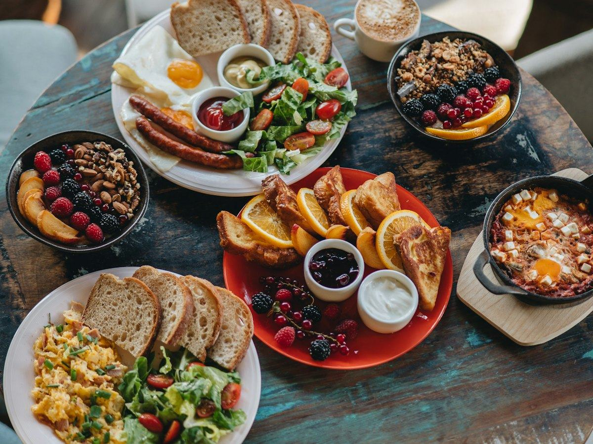
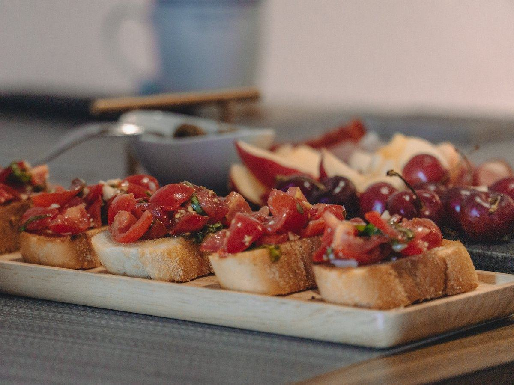
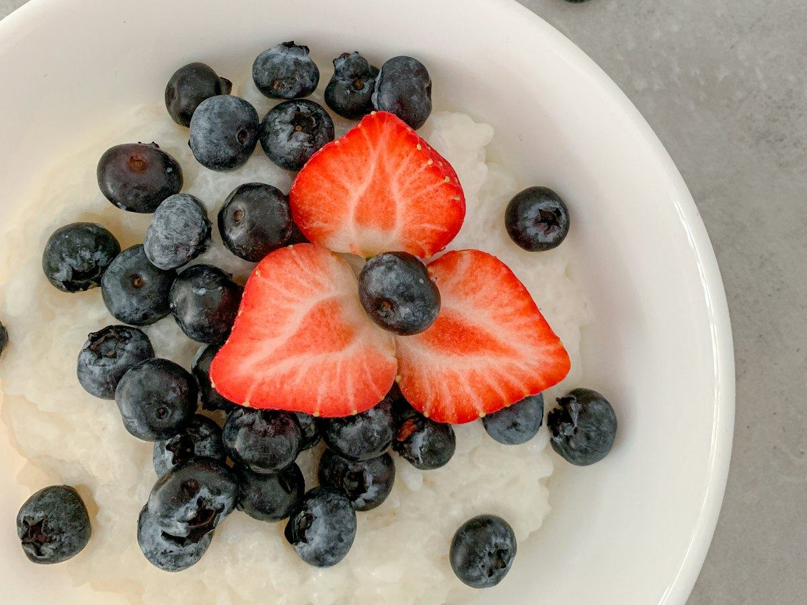
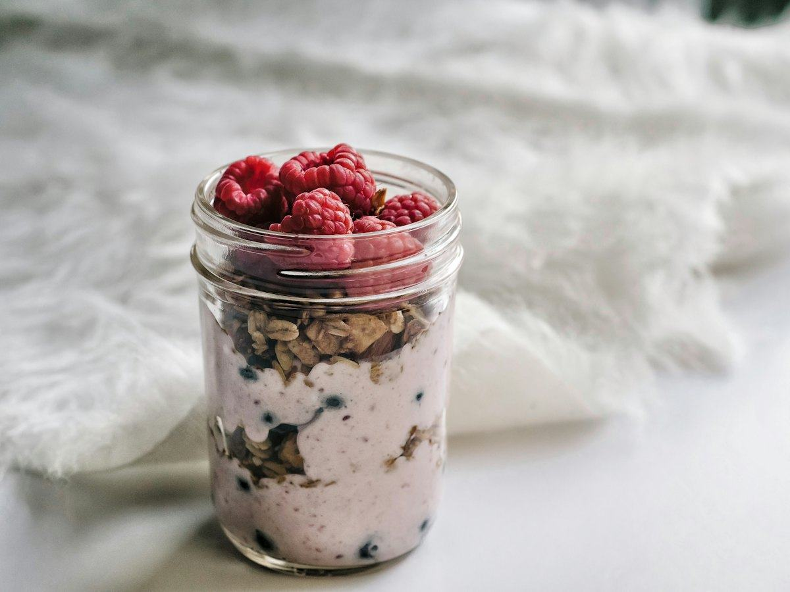
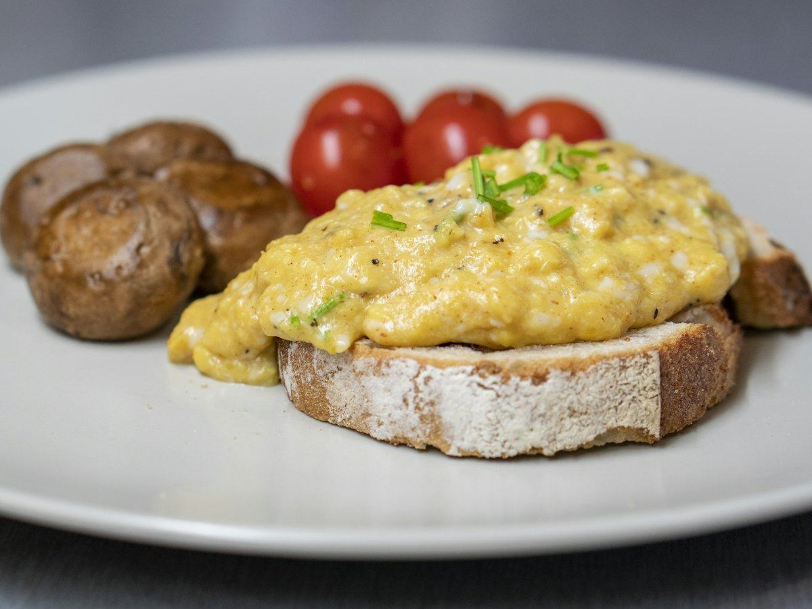
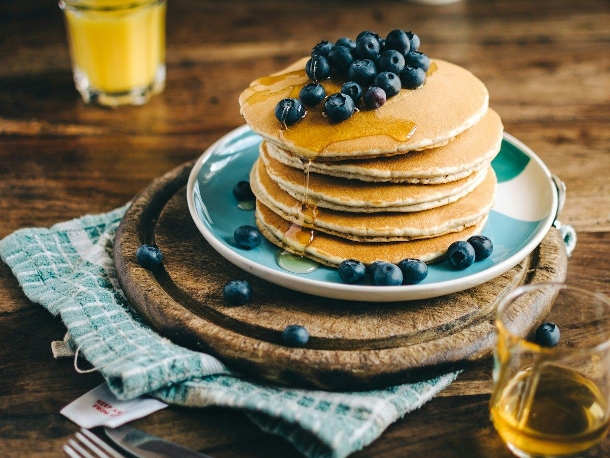

Recetas
3 recetas de salmón fáciles y saludables: al horno, en papillote y en ensalada
Salmón al horno con espárragos, en papillote con verduras y en ensalada con aguacate. Recetas fáciles con calorías, proteínas, hidratos y grasas por ración.
 Por el equipo editorial de Pombo AI
Por el equipo editorial de Pombo AI
12 nov 2026 · 7 min de lectura

Empezar el día con proteína ayuda a llegar con menos hambre a la comida. Estos cinco desayunos son fáciles, mezclan lo dulce y lo salado e incluyen un clásico español. Todos llevan su tabla nutricional por ración.

El desayuno español de siempre, con un extra de proteína gracias al pavo.
| Proteínas | 21 g | 22 % |
|---|---|---|
| Hidratos de carbono | 45 g | 49 % |
| Grasas | 12 g | 29 % |
| Fibra | 5 g |
El % indica de dónde viene la energía del plato.
Hidratos del pan integral para empezar el día y proteína magra del pavo. Si usas jamón serrano, ten en cuenta que lleva más sal.

El porridge es un desayuno caliente que llena mucho. Con yogur griego encima sube la proteína.
| Proteínas | 26 g | 24 % |
|---|---|---|
| Hidratos de carbono | 61 g | 57 % |
| Grasas | 9 g | 19 % |
| Fibra | 7 g |
El % indica de dónde viene la energía del plato.
Mucha fibra de la avena y la fruta, que ayudan a mantener la saciedad, y proteína de la leche y el yogur. Un desayuno completo y barato.

Se prepara la noche anterior en un tarro y por la mañana solo tienes que abrir la nevera.
| Proteínas | 24 g | 26 % |
|---|---|---|
| Hidratos de carbono | 51 g | 57 % |
| Grasas | 6 g | 17 % |
| Fibra | 9 g |
El % indica de dónde viene la energía del plato.
Buen equilibrio entre proteína, hidratos y fibra, con muy poca grasa. Perfecto para llevar al trabajo.

Un desayuno salado y rápido. Añadir claras aumenta la proteína sin sumar grasa.
| Proteínas | 26 g | 30 % |
|---|---|---|
| Hidratos de carbono | 24 g | 27 % |
| Grasas | 17 g | 43 % |
| Fibra | 4 g |
El % indica de dónde viene la energía del plato.
El desayuno de la lista en el que más energía viene de la proteína, con hidratos moderados del pan integral. Sacia mucho para toda la mañana.

Tortitas para el fin de semana hechas solo con avena, plátano y huevo.
| Proteínas | 29 g | 24 % |
|---|---|---|
| Hidratos de carbono | 72 g | 59 % |
| Grasas | 9 g | 17 % |
| Fibra | 9 g |
El % indica de dónde viene la energía del plato.
Un capricho con buen perfil: proteína del huevo y el yogur, e hidratos y fibra de la avena y la fruta.
Cómo calculamos los valores: sumamos los ingredientes con la base pública del USDA (FoodData Central, SR Legacy) y dividimos entre las raciones. Son aproximaciones: cambian según la marca, el tamaño y la cocción. Los sellos "fuente de" y "alta en" siguen los criterios del Reglamento (CE) 1924/2006. Para saber lo que comes de verdad, haz una foto a tu plato con Pombo AI.
¿Cuánto comes de verdad?
Con Pombo AI haces una foto a tu plato y la inteligencia artificial estima calorías, proteínas, hidratos y grasas en segundos. Es una estimación orientativa, no un dato médico.
Uno en el que una parte importante de la energía viene de la proteína: huevos, yogur griego, leche, pavo o queso fresco. En este artículo marcamos con un sello los que cumplen el criterio europeo de 'alto contenido en proteínas'.
No hay una regla única. Lo que cuenta es lo que comes a lo largo del día. Si haces ayuno intermitente, puedes usar estas recetas para romper el ayuno.
Aviso: Este artículo es informativo y no sustituye el consejo de un médico o dietista-nutricionista. Si tienes una enfermedad, tomas medicación, estás embarazada o has tenido un trastorno de la conducta alimentaria, consulta con un profesional antes de cambiar tu alimentación.
Salmón al horno con espárragos, en papillote con verduras y en ensalada con aguacate. Recetas fáciles con calorías, proteínas, hidratos y grasas por ración.
Merluza a la gallega, al horno con pimientos y a la plancha con verduras. Tres recetas de pescado blanco con su información nutricional.
Ensalada de pasta integral con atún, tostada de atún y aguacate y tomates rellenos. Recetas fáciles con su información nutricional.